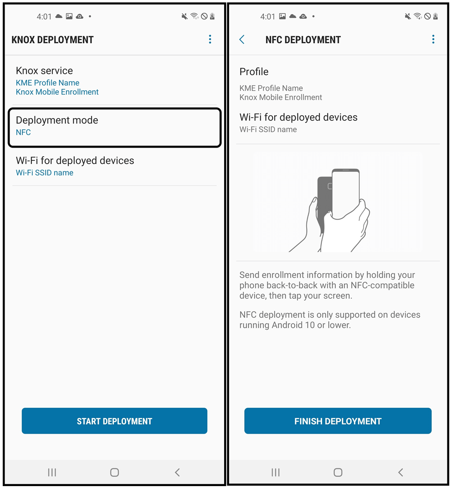

About the Knox Deployment App
Last updated June 24th, 2025
Starting with the 25.09 release, you will no longer be able to use the Knox Deployment app with Knox Configure.
To enroll devices in Knox Configure, you can use either out-of-box-experience (OOBE) or QR code methods.
The Knox Deployment App is a mobile application available from the Google Play Store that is uniquely designed to help streamline the enterprise deployment of Samsung phones and tablets running Knox 2.8 or higher. The Knox Deployment App enables customers to seamlessly enroll devices using Knox mobility solutions.
About the Knox Deployment App
The Knox Deployment App provides the flexible option to IT admins needing to bulk enroll end-user devices without having a reseller. Using this app allows IT Admins to reduce their bulk deployment time, by using a primary device without factory resetting each device. Once enrolled, an IT admin can easily locate the devices within the Knox solution console.
The Knox Deployment App does not support the enrollment of Samsung devices without Knox. Look at this list of supported devices to check whether your device is supported or not.
-
NFC enrollment
With Near Field Communication (NFC) enrollments, a non-B2B device is “bumped” (held closely together) with another smartphone device with Knox Deployment App running and scanning in NFC mode. The dedicated primary NFC device displays profiles available for enrollment and end user device enrollment begins once an IT admin selects a profile. The NFC enrollment option is not available to tablet devices. For more information, go to: NFC deployment.
NFC is not supported with Android 11 device deployments, and is not available on the device’s swipe menu.
-
Bluetooth enrollment
To support Bluetooth-based enrollments, an IT admin can install the Samsung Knox Deployment App on a dedicated admin/primary smartphone or tablet device, and select existing profiles. If the user’s device is within proximity of the primary device, the user device connects to the admin device wirelessly via Bluetooth without a PIN or password requirement. For more information, go to: Bluetooth deployment.
-
Wi-Fi Direct enrollment
Wi-Fi Direct supported devices can connect directly to each other through a WLAN, without joining a traditional wireless network or Wi-Fi hotspot. Once enabled, the device automatically scans for other supported Wi-Fi direct devices. Once discovered, specific devices can be selected for enrollment data transfer. For more information, go to: Wi-Fi Direct deployment.
Using the Knox Deployment App does not apply the profile to the admin/primary device. It only broadcasts the profile to the devices in the vicinity. Additionally, only end-user devices within physical proximity of the admin/primary device with an active Knox Deployment App can enroll.
The screens utilized within this guide are from a smartphone. If running the Knox Deployment App on a tablet, the information on the screen would be identical, just optimized to fit the tablet’s display capabilities.
App version information
Knox Deployment App version information and available open source licenses can be referenced from within the ABOUT screen. Samsung recommends you periodically compare the Knox Deployment App’s version to the latest available from Samsung to ensure you have the latest feature set and functionality available.
To launch the Knox Deployment App’s ABOUT screen:
-
Refer to the listed version number and note the version. If needed, select Open source licenses to review the open source licenses available to your Knox deployment.
Prerequisites
-
The IT admin must create a Samsung account and ensure:
- Your devices support the Bluetooth, NFC (Android 10 or below), or Wi-Fi Direct protocols. Check your device specification if unsure.
- You have at least one profile configured in the Knox Admin Portal.
-
Get the appropriate licenses to enroll devices (through the Samsung Knox Portal for KC or KG). KME does not require a license.
-
Install the Knox Deployment App on an admin/primary device, and login using their Knox Portal ID/password.
-
Select a profile on the primary device to apply to the end-user devices.
-
Ensure that the device you are enrolling has not already been uploaded to a KCS service.
- KDA is only designed for use with one KCS service at a time. Devices already enrolled via KDA can then be reassigned or updated through the KCS console it was uploaded to.
- To avoid encountering issues with KDA enrollment, please ensure you remove your device from any KCS services it is in before using KDA to enroll in another. Find more information about it here.
-
Two-factor authentication will be mandatory for all IT admins using Knox Deployment Application. Refer to 2FA for more details.
The Knox Deployment App does not support the enrollment of Samsung devices without Knox. Look at this list of supported devices to check whether your device is supported or not.
Two-factor authentication
To allow the Knox Deployment App (KDA) to leverage Samsung Account’s security features (like login alert, trusted device management, force logout, account activity history, and so on) two-factor authentication (2FA) will be required when logging in to KDA. A user who does not have 2FA set up will be directed to configure 2FA first.
A user who signs in to KDA effectively signs in with their Samsung Account on the entire device — not just KDA.
In addition, the minimum Knox version for KDA is now Knox 2.8 (Android 7.1).
The following are accepted as the second form of authentication:
- Phone number
- Authenticator app (such as Microsoft Authenticator, Google OTP, and so on)
- Verification code sent to other Galaxy devices
- Backup codes
The following images show how an IT admin can login using 2FA with a phone number:
The following are the user impacts:
- Once the user has successfully signed in, they no longer need to sign in again.
- Once the user has set up 2FA on their account, it will also be required when they sign in to Samsung Knox.
- Users using a personal Samsung Account for B2C services (for example, Samsung Health, SmartThings, and so on) will not be able to sign in to KDA on the same device with their enterprise account. They will need to sign out of their personal account first.
For more information, see the FAQs for two-step verification.
Using the Knox Deployment App
This section describes the screen flow navigation for a typical enrollment using the Knox Deployment App.
-
Select SIGN IN once the Knox Deployment App launches on the device.
If the Knox Deployment App is already running on the device, the initial screen does not display, and the application displays the sign in screen.
Make sure to sign out of any Samsung account from the device if it is not the correct account for desired deployment or doesn’t have Knox Deployment permission. If the account does not have Knox Deployment permission, the app will ask you to sign out of the current account and sign in to one with this permission.
-
Enter the Knox Portal Username and Password to sign in to the Knox Deployment App using 2FA.

If you encounter difficulty signing in to the Knox Deployment App, ensure you have either a valid Knox Portal account with privileges for the Knox solution you are trying to enroll in. If that is not the issue, select Forgot your email or password? on Knox Portal login for assistance retrieving your login credentials.
Once you have successfully signed in to the Knox Deployment App, a WELCOME screen displays providing first-time options for profile selection and deployment mode selection.
Once the Knox Deployment App profile selection and configuration mode are set, the selected options display within their respective fields, the START DEPLOYMENT screen flow enables, and the Welcome portion of screen no longer displays in subsequent logins.
Profile selection
Select a profile to utilize within the Knox Deployment App to apply specific device settings to the primary admin device using Bluetooth, NFC, or Wi-Fi Direct to enroll end user devices.
To select a configuration profile using the Knox Deployment App:
-
Select Tap here to select a profile from the Welcome screen to view the profiles available for configuration. Only profiles that have been assigned a valid license are shown.
-
Optionally filter whether all profiles are listed for potential selection or just KC or KME defined profiles. The most recent profile additions display first within their respective categories.
- Each listed profile has a brief description to help determine its relevance to a particular device enrollment mode option using the Knox Development App. An important distinction to the profile description is the profile’s relevance to mobile devices versus wearable devices.
- If needed, select the Search icon near the top of the screen to display a search field where existing profiles can be located and displayed. The search function only locates filtered profiles.
- If no profiles are available, a profile requires registration using the Knox solution console at www.samsungknox.com.
-
Select a listed profile. Once selected, the profile displays upon subsequent logins. The profile is now ready for Bluetooth, NFC, or Wi-Fi Direct deployment mode selection as described in the sections that follow.
NFC deployment
NFC is not supported with Android 11 device deployments, and is not available on the device’s swipe menu.
To enroll and deploy devices using the NFC option:
-
Navigate to the SELECT DEPLOYMENT MODE screen and select NFC as the device deployment mode.
To deploy, both NFC and Android Beam must be ON within the device’s Settings menu.

-
If setting up a Wi-Fi connection resource for the device, select Wi-Fi for deployed devices, and select either a saved or available network resource for connection. Using Wi-Fi, a device can connect to a specified configured network to communicate externally. The following restrictions apply for the Wi-Fi for deployed devices setting:
- Only out-of box Knox solution trigger deployments are supported. Trigger deployments utilize a plus sign (+) gesture on a device’s Welcome screen to start an out-of-box deployment, and bypass the setup wizard.
- The receiver device must be utilizing Knox version 3.2 or above.
- Only Note9 and Tab S4 and above devices are supported.
- Not supported on wearable devices.
- Wi-Fi credentials passed to the target device are for WEP, WPA and WPA2.
Both the primary and receiver device require an Internet connection (Wi-Fi or cellular) for this feature to work.
-
Send enrollment information to the receiving device by holding the admin/primary device back-to-back with an NFC enabled and compatible device and tapping the screen.
-
Select FINISH DEPLOYMENT on primary/admin device once the NFC deployment is completed with the end user device.
Once completed, the NFC enrolled profile displays within the Knox solution with other enrolled profiles.
Bluetooth deployment
To enroll and deploy devices using the Bluetooth option:
-
Navigate to the SELECT DEPLOYMENT MODE screen and select Bluetooth as the device deployment mode.
-
Set the Bluetooth Duration for either 30 minutes, 1 hour, 3 hours, 5 hours or 8 hours. Select OK to save the update.
- The Bluetooth duration is deployment activation period for end user devices receiving their profile configuration from the IT admin’s primary device. Once the set duration expires, devices cannot enroll with the Knox Deployment App, and the process must be repeated to continue the enrollment of other required devices.
The Accept automatically option auto accepts pairing requests from enrolling devices. When selected, the pairing dialogue does not display on either the primary or receiving device.
The device must remain ON for the entire Bluetooth duration, so ensure battery resources are available if selecting a longer duration option.
-
If setting up a Wi-Fi connection resource for the device, select Wi-Fi for deployed devices, and select either a saved or available network resource for connection. Using Wi-Fi, a device can connect to a specified configured network to communicate externally. The following restrictions apply for the Wi-Fi for deployed devices setting:
- Only out-of box Knox solution trigger deployments are supported. Trigger deployments utilize a plus sign (+) gesture on a device’s Welcome screen to start an out-of-box deployment, and bypass the setup wizard.
- The receiver device must be utilizing Knox version 3.2 or above.
- Only Note9 and Tab S4 and above devices are supported.
- Not supported on wearable devices.
- Wi-Fi credentials passed to the target device are for WEP, WPA and WPA2.
-
From the Knox Deployment screen, the select START DEPLOYMENT to initiate the defined Bluetooth duration interval.
As long as the Bluetooth Duration interval is still counting down, and user has not put the application in the background, the device display will not time out.
Bluetooth must be turned on and running on the device to start deployment. If Bluetooth is off, a prompt displays and the admin must select TURN ON to enable Bluetooth.
-
The device user must go to https://me.samsungknox.com and complete the instructions provided.
-
The end user then selects FINISH DEPLOYMENT to complete the enrollment.
Once completed, the Bluetooth enrolled profile displays within Knox solution with other enrolled profiles.
Wi-Fi Direct deployment
To successfully enroll using Wi-Fi Direct, the receiver device must be utilizing Knox version 3.2.1 and above or Android P OS and above. Wi-Fi Direct is not supported on wearable devices.
Only out-of-box “trigger” deployments are supported for Wi-Fi Direct device deployments. Trigger deployments utilize a plus sign (+) gesture on a device’s Welcome screen to start an out-of-box deployment, and bypass the setup wizard.
To enroll and deploy devices using the KDA Wi-Fi Direct option:
-
From the admin primary device, navigate to the SELECT DEPLOYMENT MODE screen and select Wi-Fi Direct as the device deployment mode.
-
Once Wi-Fi Direct is selected as the deployment mode, specify whether the Wi-Fi Direct connection is automatic or manual from the following two options:
- Accept manually — Requires a device user to enter a system generated PIN every time a connection is requested from an enrolling device. This is the default setting, and provides greater security and data protection.
- Accept automatically — Automatically accept connection requests from enrolling devices.
Both of these Wi-Fi Direct connection options are described in the sections that follow.
Accept connection requests manually
If wanting to establish a manual Wi-Fi Direct connection:
A Wi-Fi Direct manual connection requires a PIN be entered correctly before the expiration of a timer. Ensure you correctly document the displayed PIN before pressing Connect to initiate the countdown timer.
- Select Accept manually when prompted from the Select Wi-Fi Direct screen.
- Document the displayed PIN needed to proceed with the manual Wi-Fi Direct connection.
- Select Connect before the countdown expires to proceed. An Accept sharing request screen displays prompting for the required PIN before the countdown timer expires.
- Type the required PIN and select Accept. This enables the listed primary/admin device to share enrollment information via the newly established Wi-Fi Direct connection.
- Select FINISH DEPLOYMENT on primary/admin device to complete the enrollment date transfer.
Accept connection requests automatically
If wanting to establish an automatic Wi-Fi Direct connection:
- Select Accept automatically when prompted from the Select Wi-Fi Direct screen.
- Select Connect before the countdown expires to initiate a Wi-Fi Direct connection with the primary/admin device. This enables the listed device to share enrollment information via the newly established Wi-Fi Direct connection.
- Select FINISH DEPLOYMENT on primary/admin device to complete the enrollment date transfer.
On this page
Is this page helpful?